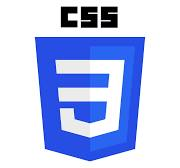
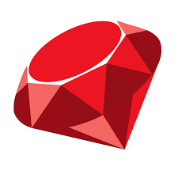

linguagens:
HTML
CSS
JAVASCRIPT
JAVA
PHP
PYTHON
C#
SWIFT
SQL
RUBY
RUST
TYPESCRIPT
C
GO
ASSEMBLY
C++
HTML:
HTML (Linguagem de Marcação de HiperTexto) é o bloco de construção mais básico da web.Define o significado e a estrutura do conteúdo da web.Outras tecnologias além do HTML geralmente são usadas para descrever a aparência (CSS)ou a funcionalidade (JavaScript) de uma página da web.
CSS
CSS é chamado de (linguagem Cascading Style Sheet)e é usado para estilizar elementos escritos em uma linguagem de marcação como HTML. O CSS separa o conteúdo da representação visual do site. Pense na decoração da sua página.

JAVASCRIPT
JavaScript (JS) é uma linguagem de programação que permite adicionar interatividade a sites e aplicativos. É uma linguagem de alto nível, legível por humanos, que é interpretada diretamente no navegador web.
JAVA
Java é uma linguagem de programação extremamente versátil. Pode ser usado para programar softwares e aplicativos para muitos sistemas operacionais e dispositivos diferentes, incluindo dispositivos IoT, celulares e computadores.
PHP
PHPé uma linguagem de script do tipo server-side com diversos propósitos. Porém, ela é principalmente utilizada para gerar conteúdos dinâmicos num site. Trata-se de uma linguagem altamente popular devido à sua natureza de código aberto e suas funcionalidades versáteis.
PYTHON
O Python é uma linguagem de programação amplamente usada em aplicações da Web, desenvolvimento de software, ciência de dados e machine learning (ML). Os desenvolvedores usam o Python porque é eficiente e fácil de aprender e pode ser executada em muitas plataformas diferentes.
C#
A C# (lê-se “C sharp”) é a principal linguagem de programação em. NET.Inclusive, ela surgiu com a primeira versão da plataforma, em 2002. Com C# é possível desenvolver aplicações de praticamente todos os tipos: desde aplicações embarcadas até aplicativos de área de trabalho, mobile e sistemas web.
SWIFT
Swift é uma linguagem de programação criada pela Apple para desenvolver aplicativos para dispositivos Apple. É uma linguagem de código aberto que combina elementos de outras linguagens, como Objective-C, C#, Rust e Python.
SQL
SQL (Structured Query Language) é uma linguagem de programação que permite armazenar, recuperar, atualizar e manipular dados em bancos de dados relacionais. É uma linguagem de domínio específico, ou seja, foi criada para um propósito específico, no caso, trabalhar com bancos de dados.
RUBY
Ruby é uma linguagem de programação de código aberto, multiplataforma e orientada a objetos. É usada para criar softwares e aplicativos web, e é considerada uma linguagem fácil de usar.

RUST
Rust é uma linguagem de programação multiparadigma e compilada, desenvolvida pela Mozilla Research. Ela é usada para criar sistemas, como sistemas operacionais, e aplicativos que precisam ser confiáveis e performáticos.
TYPESCRIPT
TypeScript é uma linguagem de programação de código aberto desenvolvida pela Microsoft. É um superconjunto sintático estrito de JavaScript e adiciona tipagem estática opcional à linguagem.
C
A programação em C é uma linguagem de programação estruturada e compilada, que permite criar programas para sistemas operacionais, aplicativos, drivers e outros sistemas.
GO
Go é uma linguagem de programação de código aberto desenvolvida pelo Google. Ela é usada para criar software de forma rápida, simples e confiável.
ASSEMBLY
A programação em Assembly, também conhecida como linguagem de montagem, é uma linguagem de programação de baixo nível que permite aos programadores interagir diretamente com o hardware do computador.
C++
C++ é uma linguagem de programação de alto nível, multi-paradigma e de propósito geral. É uma extensão da linguagem C, com recursos adicionais, como suporte à programação orientada a objetos.